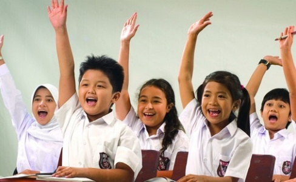
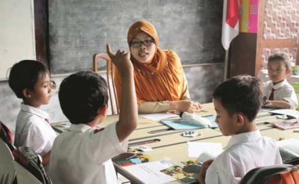
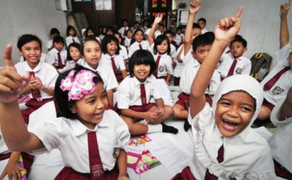
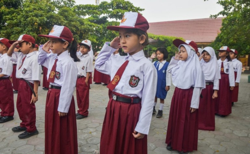
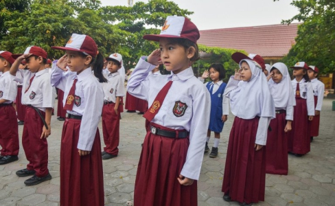

SISTEM INFORMASI GEOGRAFIS
PEMETAAN JUMLAH GURU SD DENGAN SISWA SD MENURUT KECAMATAN DI KABUPATEN SEMARANG SEMESTER GANJIL 2018/2019
Pendidikan
Pendidikan di sekolah dasar merupakan lembaga yang dikelola dan diatur oleh pemerintah yang bergerak di bidang pendidikan yang diselenggarakan secara formal yang berlangsung selama 6 tahun dari kelas 1 sampai kelas 6 untuk anak atau siswa-siswi di seluruh indonesia tentunya dengan maksud dan tujuan yang tidak lain agar anak indonesia menjadi seorang individu yang telah diamanatkan atau yang sudah dicita-citakan dalam Undang-undang Dasar 1945.
Kabupaten Semarang
Kabupatèn Semarang adalah sebuah kabupaten di Provinsi Jawa Tengah. Ibukotanya adalah Kota Ungaran. Kabupaten ini berbatasan dengan Kota Semarang di utara; Kabupaten Demak dan Kabupaten Grobogan di timur; Kabupaten Boyolali di timur dan selatan; serta Kabupaten Magelang, Kabupaten Temanggung, dan Kabupaten Kendal di barat.
Slogan Kabupaten ini adalah sebagai Bumi Serasi yang merupakan akronim dari "Sehat, Rapi, Aman, Sejahtera, dan Indah"
Potret Kegiatan di Lingkungan Sekolah Tingkat Dasar Kabupaten Semarang



 
